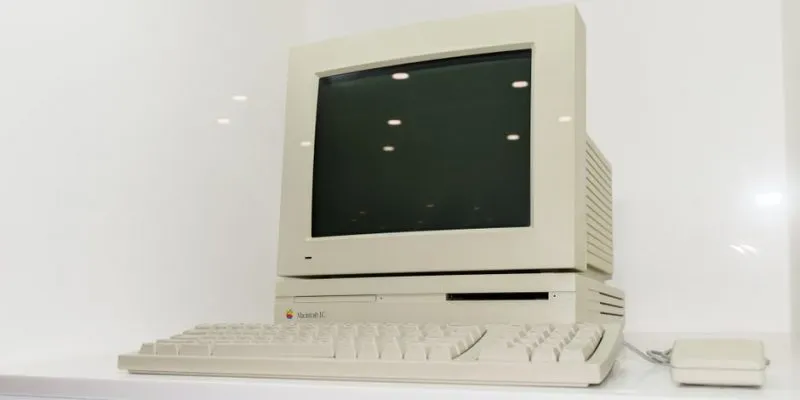
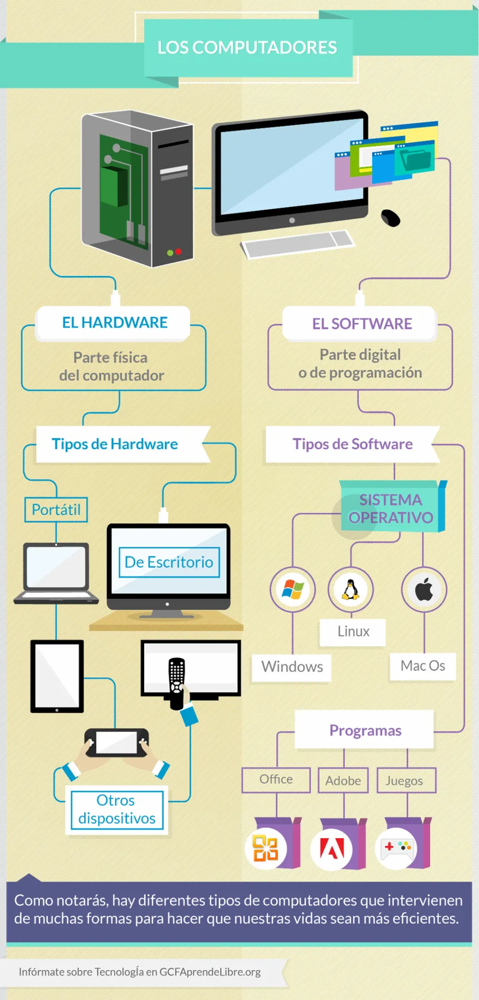
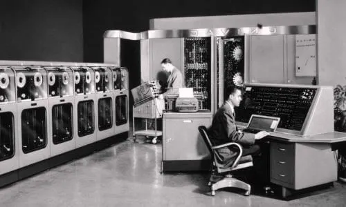
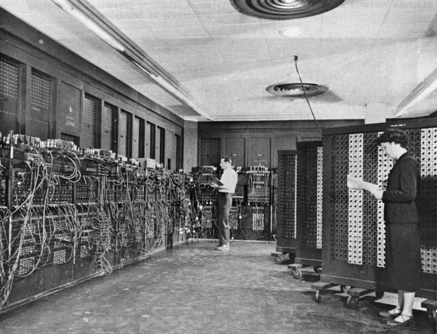

La computadora, computador es una maquina digital programable, de funcionamiento electronico y es capaz de procesar grandes cantidades de datos a grandes velocidades.
La computadora es la herramienta más versátil, potente y revolucionaria que el ser humano ha creado en su historia reciente. Representa el punto cumbre de la Revolución industrial, científica y tecnológica que presenció el siglo XX después de la Segunda Guerra Mundial.
La parte física y tangible del sistema, o sea, sus componentes eléctricos y electrónicos, que cumplen con diversas funciones fundamentales, como la realización de cálculos o la alimentación eléctrica del sistema. De algún modo equivaldría al “cuerpo” de la computadora.
La parte intangible, digital, abstracta, del sistema, que se ocupa de las operaciones de tipo conceptual o representacional, normalmente dentro de un entorno virtual simulado, esto es, dentro de una simulación que hace más amable la interacción con el usuario. Esto abarca todo tipo de programas, desde los programas de base (como el Sistema Operativo que mantiene andando el sistema) hasta las aplicaciones posteriormente instaladas. Siguiendo la metáfora, equivaldría a la “mente” del computador.
Debe considerarse lo antiguas de las bases conceptuales de todo sistema informático, como la matemática y los algoritmos (830 d.C.), o las reglas de cálculo (1620 d.C.). Sin embargo, se considera a la “máquina analítica” de Charles Babbage (1833) y la máquina tabuladora de Hermann Hollerith (1890) como los primeros computadores.
Eran equiparables aún a los sistemas que comenzaron a aparecer en el siglo XX. Liderados por el matemático inglés Alan Turing (1912-1954), durante la Segunda Guerra Mundial diversos científicos aliados colaboraban en el desarrollo de sistemas automáticos para descifrar los códigos militares enemigos.
La primera computadora electromecánica, la Harvard Mark I, nació en 1944, fruto de la empresa estadounidense IBM, y enseguida aparecieron sus sucesoras Colossus Mark I y Colossus Mark 2. A partir de entonces, cinco generaciones de computadoras se han desarrollado sucesivamente, logrando cada vez mayores capacidades
 